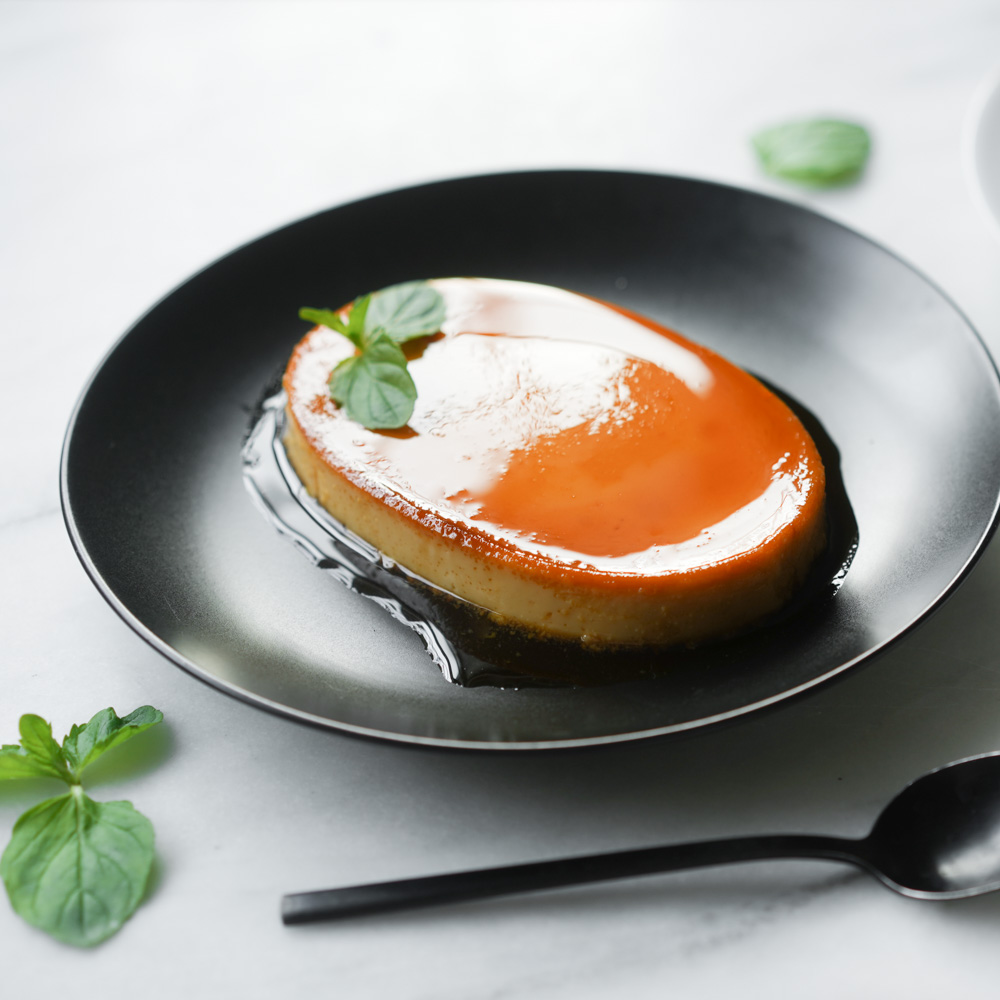
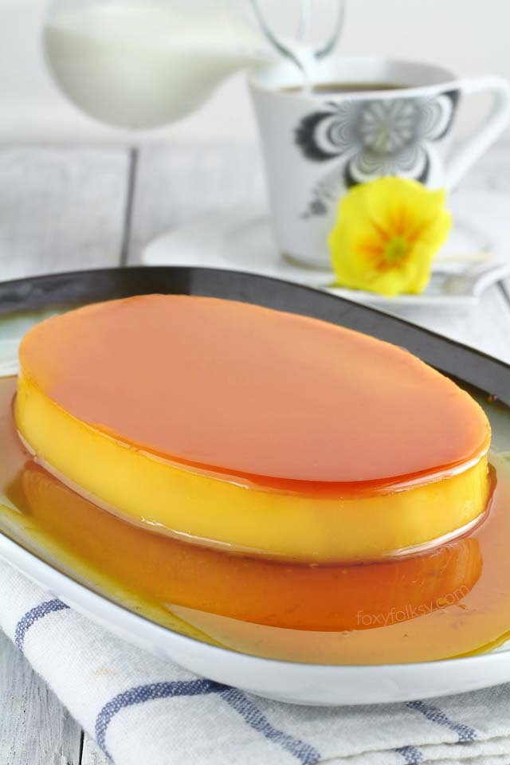
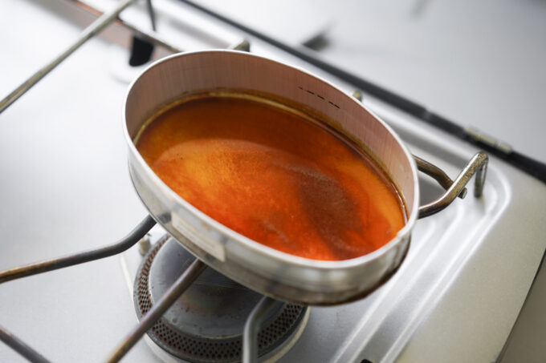
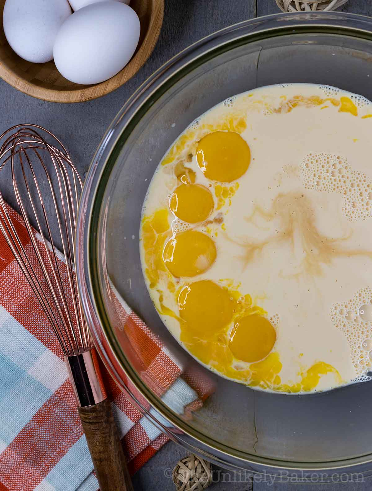
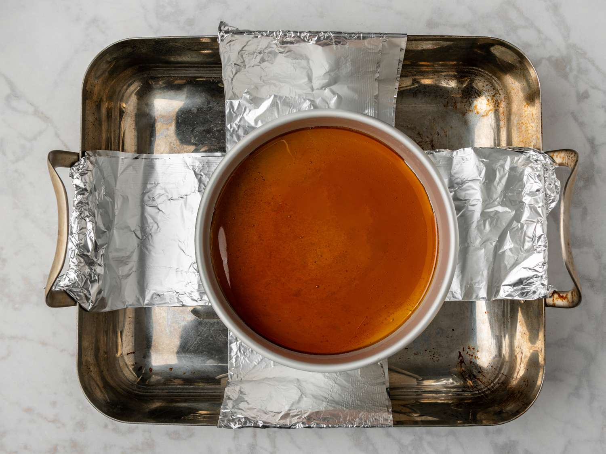
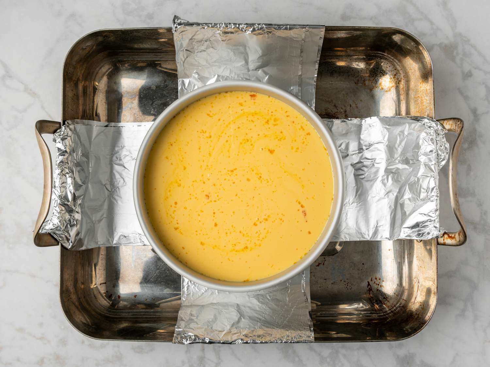
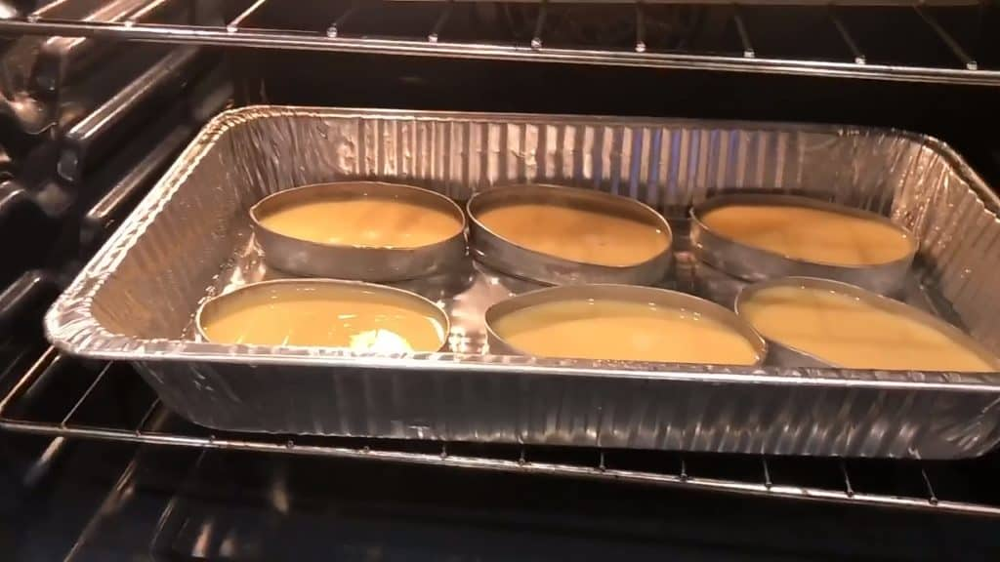
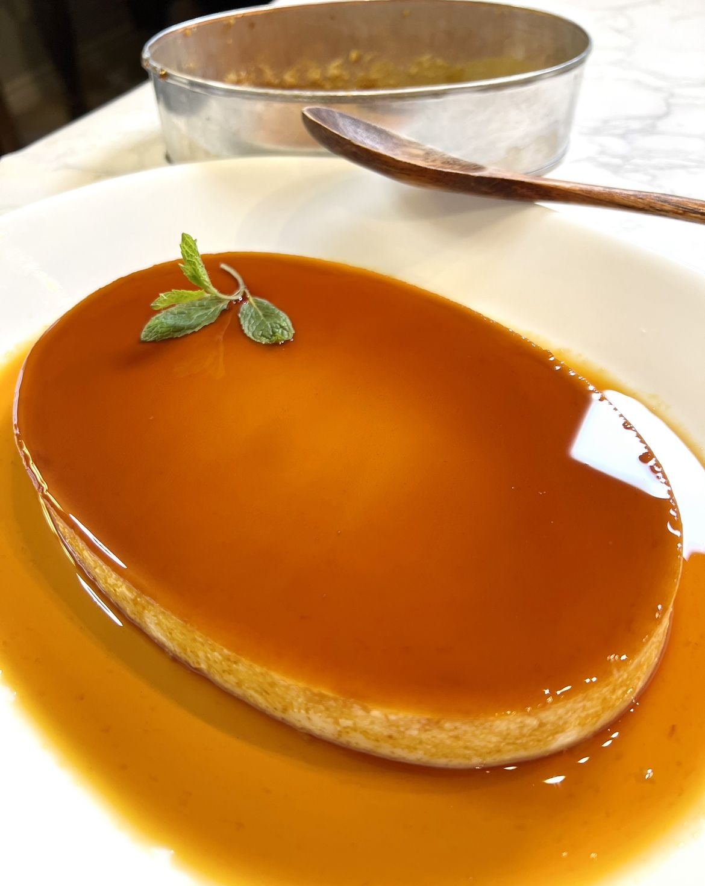

Leche flan is a dish that is the Filipino version of "creme caramel". It is a sweet dish traditionally served as dessert at parties, and other special occasions (or in my case when grandma [Lola] and grandpa [Lolo] come over). This dessert consists of a layer of caramelized sugar and a custard made of egg yolks, evaporated milk, and condensed milk. Vanilla extract and calamansi (a fruit that is a bit like lemon but sourer) or a key limes zest are usually added to add to the flavor and cut the richness/sweetness of the flan. I choose to do this recipe because it was something I ate as a child (still enjoy occasionally even now) and I also choose this dish because I am part Filipino myself. Also, there are other countries that have their own versions (such as the Spanish version) but because of modifications/preparations they taste different and have their own unique flavors.


Gather all ingredients and materials to cook with (like bowls, utensils, or plates) and preheat the oven to 190o C (375o F).
Combine sugar and water in a llanera/medium saucepan pan over medium-high heat. Bring to a boil without stirring to avoid the mixture crystallizing. Continue to boil, Stir the caramel constantly to prevent it from sticking to the bottom of the pan after you bring it to the boil, until sugar syrup begins to brown, 7 to 10 minutes. Reduce the heat to medium low and watch the color to make sure it does not burn (should be a light brown). Once done immediately pour the caramel into a 10-inch flan mold (for this amount). Carefully tilt the mold to make sure the whole bottom surface is covered.

Combine evaporated milk, condensed milk, egg yolks, and vanilla extract in a large bowl (dont put the caramel in yet/keep it on the side). Stir lightly to prevent bubbles or foam from forming and make sure to strain the batter.

Place a roasting pan large enough to hold the flan mold on the oven rack. Fold two 32-inch long sheets of foil lengthwise in quarters to make strips. Cross the strips and place the flan mold in the hot pan, with the ends of the strips extending over the edges of the hot pan. Crimp ends slightly to keep them in place.

Pour in the custard CAREFULLY from step 3 into the flan mold (into the ramikin holding the caramel). Add hot water to the pan to come halfway up the side of the mold, then Cover the pan with aluminum foil.

Bake in the preheated oven (190o C/ 375o F) until firm and a knife inserted near the center comes out clean, about 1 hour in the oven. Carefully remove the pan from the oven. Carefully remove the flan mold from the roasting pan using the foil strips. Let cool on a wire rack for about 1 hour. Cover and chill in the refrigerator until completely cool for at least 4 hours or overnight.

Run a knife around the edges of the flan (to loosen it from the mold). Cover the mold with a plate and carefully flip it over to release the flan from the mold to eat/serve. Scrape any excess caramel from the mold over the flan (optional).
